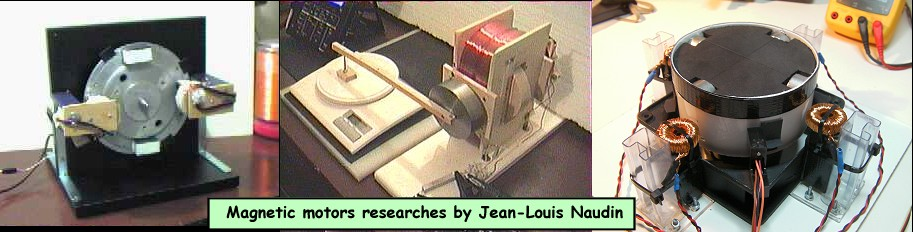

|

|
A New Magnetic-Electric Device Can Power Home From Near Free Energy Source
The Worldwide PATENT : WO028656A1:A SYSTEM FOR CONTROLLING A ROTARY DEVICE Applicant : CHRISTIE, Victor, John Issue / Filed Dates : May 18, 2000 / Nov. 4, 1999 Designated Countries : AE, AL, AM, AT, AU, AZ, BA, BB, BG, BR, BY, CA, CH, CN, CR, CU, CZ, DE, DK, DM, EE, ES, FI, GB, GD, GE, GH, GM, HR, HU, ID, IL, IN, IS, JP, KE, KG, KP, KR, KZ, LC, LK, LR, LS, LT, LU, LV, MA, MD, MG, MK, MN, MW, MX, NO, NZ, PL, PT, RO, RU, SD, SE, SG, SI, SK, SL, TJ, TM, TR, TT, TZ, UA, UG, US, UZ, VN, YU, ZA, ZW, European patent: AT, BE, CH, CY, DE, DK, ES, FI, FR, GB, GR, IE, IT, LU, MC, NL, PT, SE, OAPI patent: BF, BJ, CF, CG, CI, CM, GA, GN, GW, ML, MR, NE, SN, TD, TG, ARIPO patent: GH, GM, KE, LS, MW, SD, SL, SZ, TZ, UG, ZW, Eurasian patent: AM, AZ, BY, KG, KZ, MD, RU, TJ, TM Abstract : A system for controlling a rotatable device, the system comprising a controller and a rotary device, which has a stator and rotor, wherein the controller is connected to the rotary device to control rotation of the rotary device, and wherein the controller is adapted to periodically energies at least one energising coil of the device to create a magnetic field of a polarity which induces the rotor to rotate in a single direction and wherein the controller is switched off so as to de-energise the energising coil when other forces, being forces other than those resulting from the energised energising, coil produce a resultant force which induces rotation of the rotor in the single direction. |
| METHODS FOR CONTROLLING THE
PATH OF MAGNETIC FLUX FROM A PERMANENT MAGNET AND DEVICES
INCORPORATING THE SAME http://l2.espacenet.com/dips/viewer?PN=WO0007285&CY=ep&LG=en&DB=EPD
Abstract : A permanent magnet device (110) includes a permanent magnet (112) having North and South pole faces with a first pole piece (114) positioned adjacent one pole face thereof and a second pole piece (116) positioned adjacent the other pole face thereof so as to create at least two potential magnetic flux paths (130, 132). First control coils (122, 124) are positioned along one flux path (130) and second control coils (126, 128) is positioned along the other flux path (132), each coil being connected to a control circuit (not shown) for controlling the energization thereof. The control coils (122, 124, 126, 128) may be energized in a variety of ways to achieve desirable motive and static devices, including linear reciprocating devices, linear motion devices, rotary motion devices and power conversion. Link to the Flynn's web site : About the Flynn's Parallel Path Technology |
| The Bedini's
Motor/Generator PATENT WO0152390A1 : A
DEVICE AND METHOD OF A BACK EMF PERMANENT
ELECTROMAGNETIC MOTOR GENERATOR Applicant
: BEDINI
TECHNOLOGY INC (US); BEDINI JOHN C (US) Designated
Countries : Abstract : This invention is a back EMF permanent electromagnetic motor generator and method using a regauging process for capturing available electromagnetic energy in the system. The device is comprised of a rotor with magnets of the same polarity; a timing wheel in apposition to a magnetic Hall Effect pickup switch semiconductor; and a stator comprised of two bars connected by a permanent magnet with magnetized pole pieces at one end of each bar. There are input and output coils created by wrapping each bar with a conducting material such as copper wire. Energy form the output coils is transferred to a recovery rectifier or diode. The magnets of the rotor, which is located on a shaft along with the timing wheel, are in apposition to the magnetized pole pieces of the two bars. The invention works through a process of regauging, that is, the flux fields created by the coils is collapsed because of a reversal of the magnetic field in the magnetized pole pieces thus allowing the capture of available back EMF energy. Additional available energy may be captured and used to re-energize the battery, and/or sent in another direction to be used as work. As an alternative, the available back EMF energy may be dissipated into the system. |
 Email
: JNaudin509@aol.com
Email
: JNaudin509@aol.com
Return to the JLN Labs home page